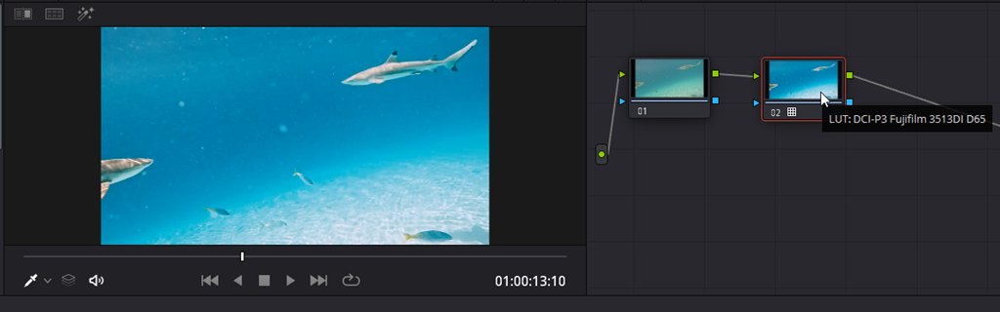

Davinci Resolve LUT 懶人二級調色實例
Nov 27, 2022

一般水底相機拍攝的影片顏色跟肉眼親見的差異很大, 網路上有很多理論探討, 但是重點是怎麼校正呢? 如何重現碧藍的熱帶海水顏色?
觀看原始影片
其實這是屬於所謂影片的二級調色, 就是調整出自己喜歡的氛圍色調. 既然這樣, 就可以在 Davinci Resolve 大膽服用 LUT 色彩模式.
雖然原始影片不是 LOG (RAW) 格式, 還是可以懶人法的找到合用的 LUT.
我用的是 Davinci Resolve 內建的 Film Look DCI-P3 Fujifilm 3513DI D65.cube. 顏色吸睛多了.

觀看 LUT 調色後的影片